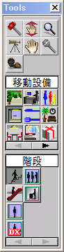
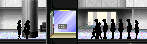
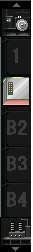
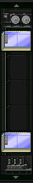
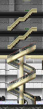
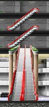

移動設備とは住人がフロア間を移動するときに使う設備を総称して言います。具体的には 階段やエスカレータ、エレベータのことを言います。
移動設備の設置に関する制限事項は基本的にテナントの条件とほぼ同じですが、同一フロアに設置される場合 ある程度離して設置しなくてはなりません。例えば、エレベータは郡単位で管理していますが、同一階接続するエレベータ同士は ある程度距離を置いたところに設置しなくてはなりません。また移動設備にはそれぞれ最大設置数が定められています。この最大設置数 を超える数を建造物内に設置することはできません。
ツールパレット→移動設備アイコン→各種移動設備アイコン
現実社会では数台のエレベータがグループ化されて運行している光景をよく目に します。これは「郡管理」と呼ばれる管理方法ので、一つのロジックで制御することで運行のロスを少なくしている のです。このとき１台１台のエレベータを「カゴ」といい、一つのグループを「群」といいます。ゲーム内においては、 エレベータはこの群単位で表示されます。丈夫の概念図が示すとおり、一つの群に属しているカゴは同じ画面に向かって手前から 奥に並んで配置されています。従って画面上で同じ群に属するカゴは同じ空間をシェアしているように見えます。当初はこれが少しばかり奇妙に移るかもしれませんが、 ゲーム内における「群」の見え方の特徴です。
ゲームが始まると設置したエレベータに乗ろうとする住人の姿が表示されます。実際の建造物などでは上へ行こうとする人も下へ行こうとしている人も
混雑し区別がつきませんが、ゲーム内ではそれが分かるように表示されます。
画面に向かってエレベータの右に並んでいる人たちは「下方向」に向かう人たちです。逆に向かってい左に並んでいる人たちは「上方向」に向かう人たちです。
ただし建物の設置範囲を超える待ち客については表示されません。
ザ・タワーⅡにはざまざまな種類のエレベータが出現します。ま
たエレベータごとに特性が異なるので、その特性に見合ったエレベータの配置が効
率的な運用のカギとなります。
例えば最初から使用できるシンプルエレベー
タの場合、１つのカゴの定員は17名です。一つの郡で配備できるカゴ6つですので、
単純計算で全てのカゴを1往復させる間に約110人の人間を運ぶことができます。朝
のラッシュタイムにはこれを数往復させるにしても、建造物の住人が1000人規模を
超えてくると１郡のシンプルエレベータだけで建造物を管理するにはやはり無理が
出てきます。
途中から大型エレベータなどの特殊なエレベータが出現するよう
になりますが、それぞれの特徴が微妙にことなります。例えば、メンテナンスエレ
ベータはホテルの従業員が客室のメンテナンス作業で利用したり、レストランの店員
が閉店後ゴミ回収所へゴミを棄てる時など、エレベータを利用できるケースが限定さ
れています。
また大型エレベータは店員42人と、シンプルエレベータに比べ1つのカゴあたりの利用可能客数が2.5倍程度多くまた運行スピードも速いのが特徴ですが、
停止階に設定できるフロアが限定されているため、シンプルエレベータとその他のエレベータ
をいかに上手く組み合わせて、効率のよい運行を確保するかが中盤以降の攻略のポイントと
なると言えるでしょう。
エレベータのカゴはその群の範囲内で、標準停止階を自由に設定することができます。主に
ビジネスマンを乗せるエレベータであれば、朝はみんなロビー階を経由してエレベータに乗り込みますので、カゴは
ロビー階に集中している方がいいのですが、逆に帰宅する時間になるとカゴを呼び出すフロアも時間もマチマチになるため、
カゴがある程度分散して停止されているのが望ましいといえます。
どのような配置に標準停止階を設定する
のが望ましいのか見つけだし、できる限りエレベータの待ち時間から来るストレスを軽減してあげましょう。
移動設備は何もエレベータだけではありません。エスカレータや階段いった移動設備も使い方しだいでは
非常に有用な移動手段になります。ただし、注意しなければならないことがあります。エスカレータや階段はエレベータと異なり、よほど混んでいない
限り待ち時間が発生しませんのでストレスは発生しません。しかし、エスカレータや階段を使うことそれ自体がストレスの要因となります。
エレベータと異なりただ乗っている目的階に到着するわけではありません。10階建ての建造物で階段しか移動設備がないとすれば、誰だっていうんざりすることでしょう。
そのあたりを考慮して、エレベータとエスカレータや階段などの移動設備を上手く組み合わせて使ってください。
定員17名、1つの群に６カゴまで設置可能。利用可能範囲は15フロア分まで。エレベータ管理ウィンドウでの 曜日・時間帯ごとのカゴの動きの設定はありません。エレベータに乗っている間にストレスはありませんが、カゴが到着するまでの間、ストレスがたまっていので、 待たされる住人のシルエットがピンクや赤になってきたら移動設備の補充を考えなければなりません。
定員17人。ホテルの従業員が客室をメンテナンスするときと、レストランの従業員が、ゴミ回収場にゴミを棄てる時に利用します。 どこまでも伸ばすことができますが、一般客は乗ることはできません。
定員42人。一つの群に8カゴまで設置可能。利用可能範囲は特にありませんが、停止フロアは8フロアのみです。主に地上から離れたフロアへの 乗り継ぎ用として利用します。特定のフロアまで客を運び、そこからシンプルエレベータやエスカレータで住人を乗り継がせる 方法が一般的です。
隣接する上下階をつなぐ移動設備です。組み合わなければ待ち時間は発生しませんが、移動に労力がかかる分、ストレス のかかる移動設備になります。ストレスがたまりやすい移動設備なので２～３フロアをつなぐのが限界です。
隣接する上下階をつなぐ移動設備です。組み合わなければ待ち時間は発生しませんので、住人たちに与えるストレスは 低いアイテムです。しかしストレスがたまらないわけではないので５～６フロアをつなぐのが限界です。